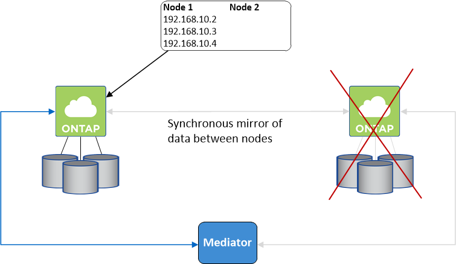

Notes de mise à jour
Notes de mise à jour
Paires haute disponibilité dans AWS
 Suggérer des modifications
Suggérer des modifications
Une configuration haute disponibilité (HA) Cloud Volumes ONTAP assure des opérations sans interruption et une tolérance aux pannes. Dans AWS, les données sont mises en miroir de manière synchrone entre les deux nœuds.
Composants DE HAUTE DISPONIBILITÉ
Dans AWS, les configurations haute disponibilité de Cloud Volumes ONTAP incluent les composants suivants :
-
Deux nœuds Cloud Volumes ONTAP dont les données sont mises en miroir de manière synchrone.
-
Instance médiateur qui fournit un canal de communication entre les nœuds pour faciliter les processus de reprise et de remise du stockage.
Médiateur
Voici quelques informations clés sur l'instance de médiateur dans AWS :
- Type d'instance
-
t2 micro
- Disques
-
Un disque magnétique EBS d'environ 8 Gio.
- Système d'exploitation
-
Debian 11

Pour Cloud Volumes ONTAP 9.10.0 et les versions antérieures, Debian 10 a été installée sur le médiateur. - Mises à niveau
-
Lorsque vous mettez à niveau Cloud Volumes ONTAP, BlueXP met également à jour l'instance médiateur si nécessaire.
- Accès à l'instance
-
Lorsque vous créez une paire Cloud Volumes ONTAP HA à partir de BlueXP, vous êtes invité à fournir une paire de clés pour l'instance de médiateur. Vous pouvez utiliser cette paire de clés pour accéder à SSH à l'aide de l'
adminutilisateur. - Agents tiers
-
Les agents tiers ou les extensions VM ne sont pas pris en charge sur l'instance médiateur.
Reprise et remise du stockage
Si un nœud tombe en panne, l'autre nœud peut servir les données à son partenaire pour fournir un service de données continu. Les clients peuvent accéder aux mêmes données à partir du nœud partenaire, car les données ont été mises en miroir de manière synchrone auprès du partenaire.
Après le redémarrage du nœud, le partenaire doit resynchroniser les données avant de pouvoir retourner le stockage. Le temps nécessaire à la resynchronisation des données dépend de la quantité de données modifiées pendant la panne du nœud.
Le basculement, la resynchronisation et le rétablissement du stockage sont automatiques par défaut. Aucune action de l'utilisateur n'est requise.
RPO et RTO
Une configuration haute disponibilité maintient la haute disponibilité de vos données comme suit :
-
L'objectif du point de récupération (RPO) est de 0 seconde.
Vos données sont transactionnaires, sans perte de données. -
L'objectif de délai de restauration (RTO) est de 120 secondes.
En cas de panne, les données doivent être disponibles en moins de 120 secondes.
Modèles de déploiement HA
Vous pouvez garantir la haute disponibilité de vos données en déployant une configuration haute disponibilité sur plusieurs zones de disponibilité (AZS) ou dans un seul AZ. Vous devriez consulter plus de détails sur chaque configuration afin de choisir celle qui répond le mieux à vos besoins.
Plusieurs zones de disponibilité
Le déploiement d'une configuration haute disponibilité dans plusieurs zones de disponibilité (AZS) garantit une haute disponibilité de vos données en cas de défaillance avec un système AZ ou une instance exécutant un nœud Cloud Volumes ONTAP. Vous devez comprendre l'impact des adresses IP NAS sur l'accès aux données et le basculement du stockage.
Accès aux données NFS et CIFS
Lorsqu'une configuration haute disponibilité est répartie entre plusieurs zones de disponibilité, adresses IP flottantes activez l'accès client NAS. Les adresses IP flottantes, qui doivent se trouver en dehors des blocs CIDR pour tous les VPC de la région, peuvent migrer entre les nœuds en cas de défaillance. Les clients ne sont pas accessibles de manière native en dehors du VPC, sauf si vous "Configuration d'une passerelle de transit AWS".
Si vous ne pouvez pas configurer de passerelle de transit, des adresses IP privées sont disponibles pour les clients NAS qui ne sont pas du VPC. Cependant, ces adresses IP sont statiques ; elles ne peuvent pas basculer d'un nœud à l'autre.
Avant de déployer une configuration haute disponibilité sur plusieurs zones de disponibilité, vous devez consulter les exigences relatives aux adresses IP flottantes et aux tables de routage. Vous devez spécifier les adresses IP flottantes lors du déploiement de la configuration. Les adresses IP privées sont automatiquement créées par BlueXP.
Pour plus de détails, voir "Configuration réseau AWS requise pour Cloud Volumes ONTAP HA dans plusieurs AZS".
Accès aux données iSCSI
La communication de données entre VPC n'est pas un problème car iSCSI n'utilise pas d'adresses IP flottantes.
Basculement et rétablissement pour iSCSI
Pour iSCSI, Cloud Volumes ONTAP utilise les E/S multichemins (MPIO) et l'accès aux unités logiques asymétriques (ALUA) pour gérer le basculement de chemin entre les chemins optimisés et non optimisés.
|
|
Pour plus d'informations sur les configurations hôtes spécifiques qui prennent en charge ALUA, consultez le "Matrice d'interopérabilité NetApp" Et le Guide d'installation et de configuration des utilitaires hôtes pour votre système d'exploitation hôte. |
Basculement et rétablissement pour NAS
Lorsque le basculement se produit dans une configuration NAS utilisant des adresses IP flottantes, l'adresse IP flottante du nœud que les clients utilisent pour accéder aux données transférées sur l'autre nœud. L'image suivante illustre la reprise du stockage dans une configuration NAS à l'aide d'adresses IP flottantes. Si le nœud 2 s'arrête, l'adresse IP flottante du nœud 2 passe au nœud 1.

Les adresses IP de données NAS utilisées pour l'accès VPC externe ne peuvent pas migrer entre les nœuds en cas de défaillance. Si un nœud est hors ligne, vous devez remonter manuellement les volumes vers des clients en dehors du VPC à l'aide de l'adresse IP de l'autre nœud.
Une fois le nœud défaillant remis en ligne, remontez les clients vers les volumes à l'aide de l'adresse IP d'origine. Cette étape est nécessaire pour éviter le transfert de données inutiles entre deux nœuds HA, ce qui peut entraîner un impact significatif sur les performances et la stabilité.
Vous pouvez facilement identifier l'adresse IP correcte dans BlueXP en sélectionnant le volume et en cliquant sur Mount Command.
Zone de disponibilité unique
Le déploiement d'une configuration HA dans une seule zone de disponibilité (AZ) peut garantir une haute disponibilité de vos données en cas de défaillance d'une instance exécutant un nœud Cloud Volumes ONTAP. Toutes les données sont accessibles en mode natif depuis l'extérieur du VPC.
|
|
BlueXP crée un "Groupe de placement AWS réparti" Et lance les deux nœuds haute disponibilité de ce groupe de placement. Le groupe de placement réduit le risque de défaillances simultanées en répartissant les instances sur un matériel sous-jacent distinct. Cette fonctionnalité améliore la redondance en termes de calcul, et non en termes de défaillance des disques. |
Accès aux données
Cette configuration étant dans un seul AZ, elle ne nécessite pas d'adresses IP flottantes. Vous pouvez utiliser la même adresse IP pour accéder aux données depuis le VPC et depuis l'extérieur du VPC.
L'image suivante montre une configuration HA dans un seul AZ. Les données sont accessibles depuis le VPC et depuis l'extérieur du VPC.

Takeover et Giveback
Pour iSCSI, Cloud Volumes ONTAP utilise les E/S multichemins (MPIO) et l'accès aux unités logiques asymétriques (ALUA) pour gérer le basculement de chemin entre les chemins optimisés et non optimisés.
|
|
Pour plus d'informations sur les configurations hôtes spécifiques qui prennent en charge ALUA, consultez le "Matrice d'interopérabilité NetApp" Et le Guide d'installation et de configuration des utilitaires hôtes pour votre système d'exploitation hôte. |
Pour les configurations NAS, les adresses IP des données peuvent migrer entre les nœuds HA en cas de défaillance. Cela garantit l'accès du client au stockage.
Fonctionnement du stockage dans une paire haute disponibilité
Contrairement à un cluster ONTAP, le stockage dans une paire Cloud Volumes ONTAP HA n'est pas partagé entre les nœuds. En revanche, les données sont mises en miroir de manière synchrone entre les nœuds afin que les données soient disponibles en cas de panne.
Allocation du stockage
Lorsque vous créez un nouveau volume et que vous avez besoin de disques supplémentaires, BlueXP alloue le même nombre de disques aux deux nœuds, crée un agrégat en miroir, puis crée le nouveau volume. Par exemple, si deux disques sont requis pour le volume, BlueXP alloue deux disques par nœud pour un total de quatre disques.
Configurations de stockage
Vous pouvez utiliser une paire haute disponibilité en tant que configuration actif-actif, dans laquelle les deux nœuds fournissent des données aux clients ou en tant que configuration actif-passif, dans laquelle le nœud passif ne répond aux demandes de données que s'il a pris le relais du stockage du nœud actif.
|
|
Vous ne pouvez configurer une configuration active/active que si vous utilisez BlueXP dans la vue du système de stockage. |
Attentes en matière de performances
Une configuration Cloud Volumes ONTAP HA réplique de manière synchrone les données entre les nœuds, ce qui consomme de la bande passante réseau. Par conséquent, vous pouvez vous attendre aux performances suivantes par rapport à une configuration Cloud Volumes ONTAP à nœud unique :
-
Pour les configurations haute disponibilité qui ne servent que des données provenant d'un seul nœud, les performances de lecture sont comparables aux performances de lecture d'une configuration à un nœud, alors que les performances d'écriture sont plus faibles.
-
Pour les configurations haute disponibilité qui servent les données des deux nœuds, les performances de lecture sont supérieures aux performances de lecture d'une configuration à nœud unique et les performances d'écriture sont identiques ou supérieures.
Pour plus d'informations sur les performances de Cloud Volumes ONTAP, reportez-vous à "Performance".
Accès client au stockage
Les clients doivent accéder aux volumes NFS et CIFS en utilisant l'adresse IP de données du nœud sur lequel réside le volume. Si les clients NAS accèdent à un volume en utilisant l'adresse IP du nœud partenaire, le trafic passe entre les deux nœuds, ce qui réduit les performances.

|
Si vous déplacez un volume entre les nœuds d'une paire HA, vous devez remonter le volume en utilisant l'adresse IP de l'autre nœud. Sinon, vous pouvez bénéficier d'une performance réduite. Si les clients prennent en charge les renvois NFSv4 ou la redirection de dossiers pour CIFS, vous pouvez activer ces fonctionnalités sur les systèmes Cloud Volumes ONTAP pour éviter de remanier le volume. Pour plus d'informations, consultez la documentation ONTAP. |
Vous pouvez facilement identifier l'adresse IP correcte via l'option Mount Command du panneau Manage volumes de BlueXP.